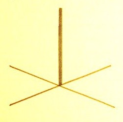

祝詞の文言について
明主様御垂示 「天津祝詞真解」 （昭和23年7月21日）
「「高天原に神留り座す」神様が一杯いられる事とは違う。そこの地域の一番良い所をいう。
人間の高天原は天庭、天。腹は地の高天原である。頭の掛りと腹の掛りと相談し合っている。
前頭部は考える。考えるとか覚えるとかの働き。後頭部は喜怒哀楽、勇気は肚で、頭で指導し、実行するのは腹である。
一町村では産土神、日本では伊勢神宮になる。これは少し落ちたんで、今日本では国の高天原はない訳であるが、あれを復興するか上げるかである。
皇御祖、字の通りいえば皇室の御先祖、つまり大統領とか主権者、主脳者の先祖という事。伊邪諾尊である。
伊邪諾、伊邪冊尊は霊体の神である。伊邪冊尊、これは汚す方で、伊邪諾尊は掃除する方で、大浄化する。
「筑紫の日向の橘の小戸」これは土地の名で、九州であろう。
神様は型で行かるる故、そこをすると全部を掃除する事になる。
お浄めは、伊邪諾尊の御仕事である。
「命もちて」御命令で。
「祓戸の大神等」その時に四柱の神が生れた。
みんな総動員で大浄化する。
この言霊により、光が出て浄まる。とにかく、これによって霊界は浄まる。言霊の働きである。」
明主様御教え 「高天原の所在地」 （昭和11年1月25日発行）
「世にタカマガハラ、と言いますが、あれは間違っております。
高天と書いてあるんで、天と言う字をマガと言う事はない。
天の岩戸と言う様にアメとかアマとか読むのであります。
いつの頃からか、マガと読んだのは邪神が、自分に都合のいいように、そう読ませたんだと思うのであります。
しからば高天原とは一体どこにあるかと申しますと、
以前から、学者や宗教家達が研究しているんですが、今以て判らぬのであります。
中には、希臘（ギリシャ）とか、又は印度のヒマラヤ山とか、
又は日本の伊勢だとか、信州にあるとか言う人もあって、
高天原争いは、今以て決定しないのであります。
所が実は、高天原は、どこにでもあるのであります、
小にしては人間の体内即ち心の中であります。
頭と腹にあります。頭は天の高天原であり、腹は地の高天原であり、頭と腹は天地になっているのであります。
心の中にも高天原があって、神仏を拝むという、この心が高天原で、
信仰心のない人は、曇っていて、未だ高天原が開けていないのであります。
「高天原に神留ります。」と祝詞にもありますけれど、
信仰のある人の心には、確かに神様がおいでになるのでありますから、
まず人間は、心に高天原を築かねばならぬのであります。
一家にしますと、神様や仏様が祭ってある所が高天原であります。
仏の方で極楽浄土、神道の方で高天原であります。
観音様は、神仏両方面のお働きになりますから、
極楽浄土にも、高天原にも、御出でになる訳であります。
神や仏を祭ってないのは、その家には未だ、高天原がない訳であります。
又一地方とか一町村の高天原はどこかといいますと、それは産土神社であります。
高天原に神集うなど言いますがそれは土地の神々が、産土神の御社へ集まられる事で、
人間でも、信仰のある人達が、その神社などへ集まる、
特に昔はそういう風に、何事も、神社へ集まっては相談をしたものであります。
今は、産土様というても、ほんの名前だけで、
一年に一度祭礼の時、お神輿（みこし）の相談に集まる位のものであります。
ところで、今日重要な会議を待合とか料理屋で、芸者相手にするから、碌（ろく）な相談は出来っこない。
不正な問題や、疑獄など醸（かも）すのは当り前であります。
政党なども、何か問題を討議するに、そういう場所でやりますから、
真に国家の為になる、正しい結論は得られないから、
政党政治は世人から見放されるようになるのであります。
これも自業自得で仕様がありません。
昔はすべて、神社で会議をしたんであります。
日本の内閣も、山王の日枝神社の側の山の上に造るとか、
又は霞ヶ関に神殿を造り、祝詞を奏上し、斎戒沐浴して、
御神霊の前で会議をする様にならなければ巧くゆく道理が無いとおもいます。
その様にすれば、防弾チョッキを着て、びくびくする必要もなく、
涜職（とくしょく）大臣など出る訳はないのであります。
日本式の政治は、そうならなければならないのであります。
これが高天原の政治で神政であります。
又東京の高天原は宮城に当り、日本の高天原は伊勢になり
世界の高天原は、本当の意味から言えば日本であります。
基督（キリスト）教では、日曜毎に教会に行く事になっておりますが、
これらも、その地方地方の人が、一週に一回、高天原へ行って、神の光に浴するのであって、まことに結構であります。
そういう具合に、高天原は到るところにあり、大中小と、それ相応にあるんであります。
こんな判り切った事が、未だ決まっていないのは、むしろ不思議と思うのであります。」
明主様御垂示 「高天原の所在地」 （昭和24年6月27日）
信者の質問
「高天原は何県にあるのでしょうか。御教示下さい。」
明主様御垂示
「高天原をタカマガハラといふが、マガの言霊は面白くない。アマが本当である。
昔から学者がどこにあるとか言うが、これはどこにでもあるのである。
天というのは、人間でいえば頭であり、部屋なら床の間、箱根なら神山荘、国なら伊勢の大神宮であり、天理教では大和である。
つまり一番良い場所の事で、清い尊い所をいう。
また、仏教なら高天原の事を都率天というので、どこにあるというのはおかしい。」
明主様御垂示 「高天原の所在地」
信者の質問
「高天原の所在地につき諸説があります。地上にありとすればどこに相応しますか。」
明主様御垂示
「高天原には種々な説があるが皆本当ではないので、実はあらゆるものに高天原がある。
人間でいえば頭、即ちこれを天庭という。一軒の家では床の間になる。
また床の間へ神様を祭り朝夕礼拝すればその床のある部屋全体が高天原になる。
また一府県なり、一地方なりでもその一番清浄なる所が高天原で、それはこれから本当にそういう高天原が出来るのである。」
明主様御垂示 「神漏岐、神漏美の命の意味」 （昭和23年6月28日）
信者の質問
「天津祝詞の中の神漏岐（かむろぎ）、神漏美（かむろみ）の命様について・・・」
明主様御垂示
「高御産（たかみむすび）、神御産（かみむすび）の神なのです。
一番上に、天御中主大神、次に神漏岐、神漏美、次に高御産、神御産、次に伊弉諾となるのです。」
明主様御垂示 「神漏岐、神漏美の命の意味」 （昭和23年7月19日）
「いずれにしても大した意味はない。
神漏岐、神漏美、これは夫婦といってもいい。御禊祓って、四柱の神が生れた。（以下別御応答転記）
伊邪諾尊は浄める御仕事。
伊邪冊尊は濁る御仕事。
右廻りは唯物、左廻り・・・。
日向・・・地名。
御禊は、水に濺ぎの神事である。」
明主様御垂示 「天津神と国津神の区別」 （昭和25年10月15日発行）
信者の質問
「天津神（あまつかみ）、国津神（くにつかみ）の区別についてお教え願います。」
明主様御垂示
「天津神とは天系であり、国津神は地系である。
勿論文字通り上下の位である。
しかしこれを詳しく言うことはいまはできない。
神秘があるからである。」
大祓祝詞の文言の解釈
明主様御垂示 「天津菅麻と金木」 （昭和24年9月18日）
信者の質問
「大祓祝詞中の「天津菅麻」「天津金木」と易学との関係につき御教示を御願い致します。」
明主様御垂示
「天津菅麻は、天の神の御先祖という事。
天津金木は（神武以前、元旦に天皇がその年の吉凶禍福を占った。いずれお宮で出来る。場所も分っている。今に発表する）
三尺位の木を十字に結んだものである。」

明主様御垂示 「皇御孫命」 （昭和24年10月3日）
信者の質問
「皇御孫命とはどういう神様ですか。」
明主様御垂示
「神の霊統である。国王のようなものである。
神武以後は違う。系統が違って来た。
厳格にいえば神武以前である。」